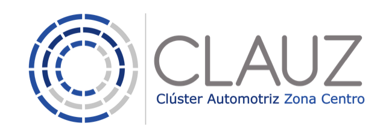
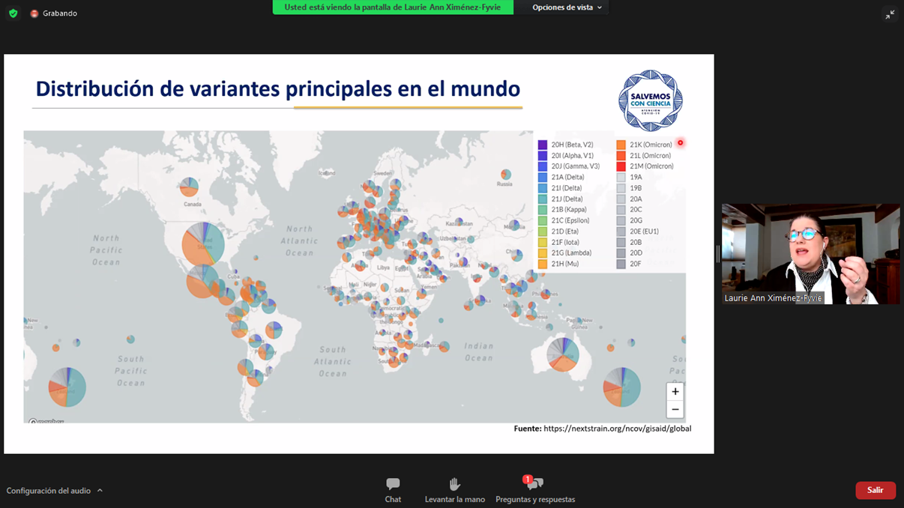
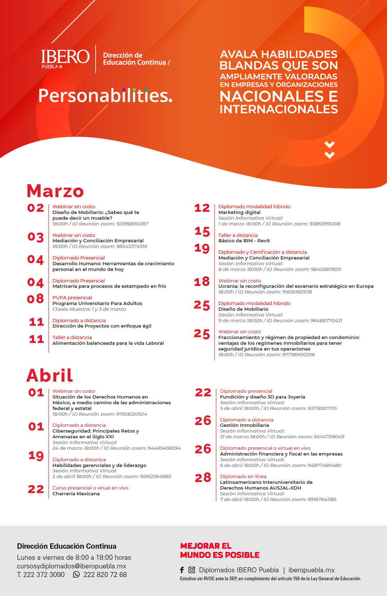

Boletín Digital
Marzo
Encuentro de Proveeduría con EDAG
En el marco del Comité de Proveeduría, EDAG, socio afiliado del Clúster Automotriz Zona Centro, lanzó una convocatoria para sostener encuentros virtuales con representantes de empresas que cumplieran con los requerimientos solicitados para el proyecto de desarrollo de Camión Eléctrico. En la jornada de proveeduría, participaron alrededor de 40 empresas quienes compartieron y dieron a conocer sus servicios en cumplimiento a los commodities establecidos.
Al cierre del encuentro virtual, EDAG agradeció al CLAUZ el apoyo resaltando que más adelante se podrán realizar más encuentros de proveeduría para el fortalecimiento de la cadena productiva del sector.
Encuentro de Proveeduría con John Deere
Una de las principales características que distingue a las operaciones de John Deere en nuestro país, es la eficiencia en el manejo de costo, mismo que se ha logrado gracias a la eficiente localización de proveedores.
Bajo esta coyuntura, el Clúster Automotriz Zona Centro, realizó con John Deere un ejercicio de proveeduría para que industriales ubicados en la zona, pudieran sostener un encuentro puntual respecto a las necesidades de proveeduría que la empresa fabricante de tractores y maquinaria agrícola solicitó.
El encuentro se realizó bajo reglas de normatividad adecuada para asegurar la eficacia en el proceso de selección.
Automotive Supplier Day CLAUZ - CANACINTRA Puebla
Con la finalidad de reunir a los industriales de los Sectores productivos tales como; Automotriz, Autopartes, Metalmecánico y Plástico, junto con la Cámara Nacional de la Industria de Transformación en Puebla, llevamos a cabo el Automotive Supplier Day. El encuentro se llevó a cabo en las instalaciones del Centro de Vinculación de la UPAEP en el que los asistentes participaron en conferencias magistrales y encuentros de negocio.
Como parte de las actividades que se realizaron, el Automotive Supplier Day contó con la intervención de personalidades referentes del sector para platicar temas de coyuntura automotriz tales como: Thomas Karig, Director General de TKonsult; Eduardo Fernández, Fundador y CEO de Blue Supply Chain Solutions, Régulo Salinas, Vicepresidente de negocios de Ternium y Presidente del Comité de Energía en CONCAMIN; Myriam Cronk, Program Lead CTPAT - AEO Supply Chain Security Compliance en AIAG y de Mauricio Kuri, Director de Comunicación y asuntos de Gobierno de Volkswagen de México.
Al cierre del encuentro, los asistentes participaron en un atractivo Networking para enriquecer la dinámica de servicios y promoción de las empresas que representan.
Asamblea Anual Ordinaria del CLAUZ
El Consejo Directivo del Clúster que encabeza el Ing. Jesús Rascón, sesionó recientemente en las instalaciones del Hotel Hilton Garden Puebla, para dar a conocer los resultados que, durante el 2021 se llevaron a cabo en su primera gestión como presidente del CLAUZ.
En el encuentro, contamos con la presencia de Julio Galván, Gerente del Estudios Económicos de la Industria Nacional de Autopartes y de Juan Carlos Baker, CEO en ANSEY Consultores Internacionales; quienes compartieron respectivamente temas sobre Perspectivas de la Industria Automotriz y Desafíos de la Industria Automotriz en México.
Al final, el Presidente del CLAUZ, Ing. Jesús Rascón, agradeció la presencia a quienes se dieron cita al evento, señalando que frente a los nuevos retos que afronta el Sector Automotriz, el CAUZ, es un ente que genera rutas de oportunidad para el desenvolvimiento competitivo de las empresas y así, ser puntas de lanza en el desarrollo de un sector calificado y fuerte para la región.
Foro: Las mujeres en STEM, un camino hacia la equidad.
El Gobierno del Reino Unido, la Embajada Británica y el Programa Skills for Prosperity México, llevaron a cabo una serie de conferencias en relación a la importancia de la mujer en puestos estratégicos de trabajo, mismo que la Directora del Clúster Automotriz Zona Centro, participó en el encuentro virtual resaltando que hoy por hoy, las mujeres han ganado terreno en puestos que antes los hombres ocupaban y que ello, representa un gran avance para seguir reduciendo la brecha cultural de género, dignificando a las mujeres en aspectos torales como son: el respeto y mejores salarios.
Omicrón: ¿el fin de la pandemia?
En conjunto con la Red Nacional de Clusters de la Industria Automotriz, llevamos a cabo una conferencia más sobre el comportamiento de la pandemia de COVID y sus variantes en México y en el Mundo. En voz de la Dra. en Ciencias y Directora General de Salvemos con Ciencia, Laurie Ann Ximénez, conocimos el avance de la variante Omicrón en el mundo, así como de su desenvolvimiento en nuestro país.
En relación a la variante Omicrón, la Dra. Ximénez - Fyvie, enfatizó que no hay que minimizar, ya que tiene un potencial de contagia mucho más elevado que las anteriores variantes y sobre todo, puede tener efectos severos en personas que no se hayan aplicado las vacunas correspondientes. Por tal motivo, es importante seguir con las medidas sanitarias preventivas como es el lavado de manos, usar mascarilla y sana distancia.

Próximos webinars:
1. Coaching Kata: Como una rutina de gestión para la solución de problemas.
Martes 19 de abril de 8:00 a 9:30 a.m.
Virtual.
2. Design Thinking: Metodología para el éxito de la Innovación.
Miércoles 20 de abril de 8:00 a 9:30 a.m.
Virtual.
3. Creación y desarrollo de equipos de alto desempeño.
Jueves 21 de abril de 8:00 a 9:30 a.m.
Virtual.
Espere más información en los próximos días.
Programas y ofertas de Educación Continua IBERO Puebla

Más información :
https://www.iberopuebla.mx/oferta-academica/cursos-y-diplomados